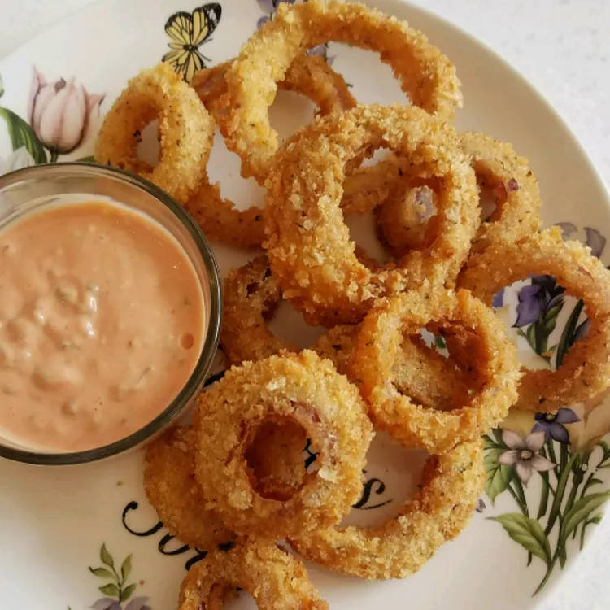

Description:
Onion rings are a great snack - often ordered as a side with burgers or pizza.
Ingredients
- Sweet Onion
- Oil
- Flour
- Baking Powder
- Salt
- Milk
- Egg
- Dry Bread Crumbs
- Seasoned Salt
Steps
- Gather ingredients
- Slice onion into rings
- Prepare breading station with three dishes. Flour, baking powder, and salt in the first dish. Milk and egg in the second dish. Bread crumbs in the third dish.
- Dip each onion ring into each dish, turning over.
- Deep fry
- Sprinkle with seasoning salt.
Home